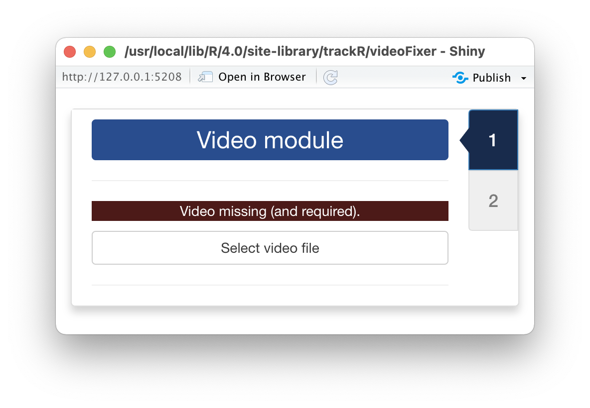
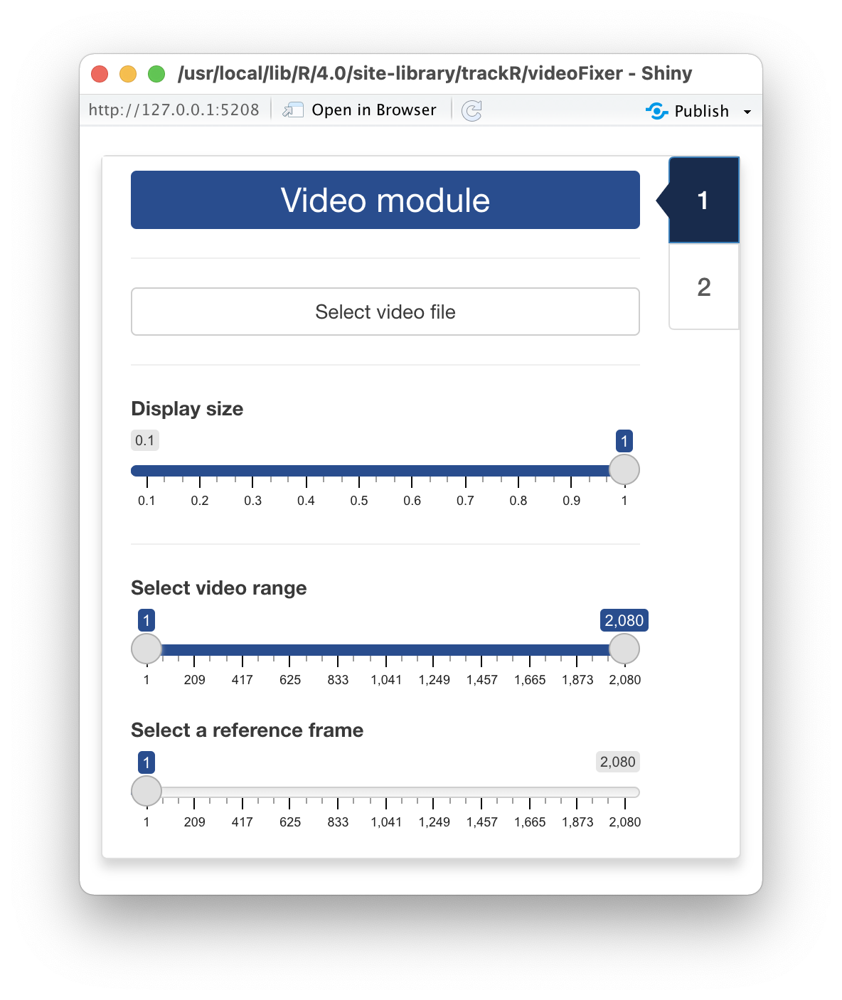
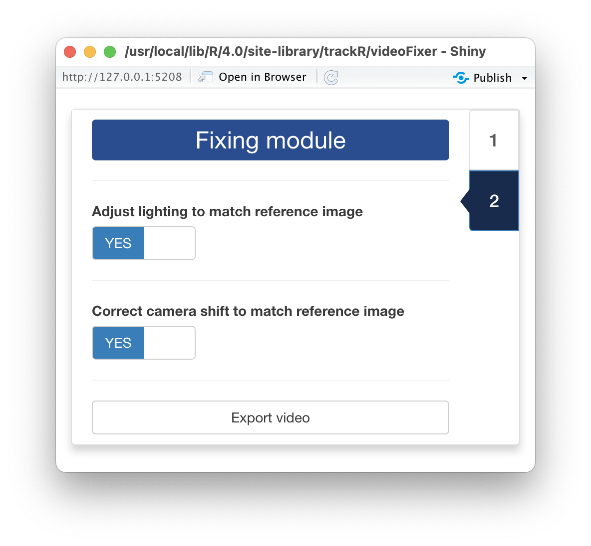

0 - Introduction
Videos can suffer from multiple issues that can make tracking
difficult or even prevent it altogether. Two of the most common issues
are camera movement and light/color variations. Camera movement is often
caused by improper camera support (e.g. ball head too weak for the
weight of the camera) or by vibrations or shocks received by the
apparatus during the recording (e.g. if the apparatus is accidentally
knocked off position by the experimenter). Light and color variations
are frequent when recording outdoors or when the apparatus is not
properly isolated from external light sources (e.g. when someone opens
up a door or turn on and off the lights during an experiment).
trackR provides a convenient utility to attempt to fix
these common issues: videoFixer(). You can launch
videoFixer by typing the following command in your R
console:
Note that using videoFixer is completely optional. If
your videos have none of the aforementioned issues, you can skip this
step and move directly to the rest of the tutorials.
1 - Video module

Once videoFixer has started, it will open two windows: a
display window that will later be used to display the video (note: this
window may be hiding behind other windows) and the window shown here
that will display all the app controls.
First, you will need to click the “Select video file” button. This
will bring up a navigator that you will use to locate the video file
that you would like to prepare for tracking. Once you have located the
video file in the navigator, click the “Select” button.
videoFixer will open the video and display its first image
in the display window.

After the video has been opened, the control panel will be updated to
look like in the image shown here
The 3 sliders in the control panel are the following:
-
Display size allows you to change the size of the
display window, for instance if the video is too wide for the screen. It
does not affect the video quality.
-
Select video range allows you to exclude parts of the
video (at the beginning and at the end) from the tracking process. This
can be useful to ignore, for instance, the beginning of an experiment
during which the animals are habituating to the environment.
-
Select a reference frame allows you to select a frame
from the video that will be used as a reference for adjusting the
position and lighting of the other frames in the video. It is generally
better to select a frame that shows as much as possible of the area to
track and which lighting conditions are as representative as possible of
the general lighting conditions in the rest of the video.
2 - Fixing module

After you have set the 3 aforementioned sliders to the desired
values, click on the tab marked “2” on the right side of the control
panel window. This will load the “Fixing module” that looks like the
image shown here.
In this module, you can decide what you would like
videoFixer to fix. If your video has lighting issues, turn
the “Adjust lighting to match the reference image” switch on. If your
video has issues with camera movement, turn the “Correct camera shift to
match the reference image” switch on.
Once this is done, click the “Export video” button. This will open a
navigator that will allow you indicate where to save the corrected
video. After indicating the name of the new video file, click the “Save
video as…” button and videoFixer will start processing the
video and attempt to correct its lighting and/or camera movement
issue.
Once videoFixer has finished processing the video and
you have checked the result, you can proceed to the rest of the
tutorials.